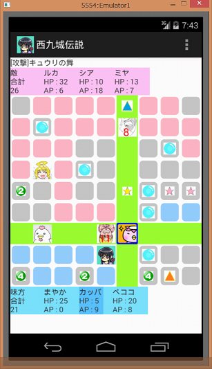
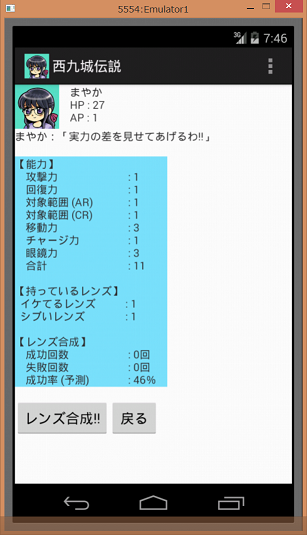

「西九城伝説」は、Android端末向けのゲームアプリです。
蜜柑のほか、6人のクリエイターが参加したプロジェクト「GLASSESLOVE SOFT」による作品です。
＜ゲーム概要＞
陣取りゲーム（VSコンピュータ）
＜動作環境＞
Android2.3以上(Android4.0以上推奨)
＜ダウンロード＞
西九城伝説ダウンロード
＜インストール手順＞
※インストール前に、このページの最下部に記載されている「免責事項」を必ずご確認ください。
①お使いのAndroid端末から上記リンクをクリックして「Nishikujyo.apk」ファイルをダウンロードしてください。
②端末の「ダウンロード」から①でダウンロードした「Nishikujyo.apk」を選択し、「パッケージインストーラ」で開いてください。
③「インストール」を選択してください。(10秒～30秒程度かかります)
このゲームは大きく「漫才画面」と「バトル画面」に分かれています。
「漫才画面」でストーリーが進み、ストーリー中に現れた敵と「バトル画面」で戦います。
このページでは、ゲームに登場するキャラクターと「バトル画面」のルールを紹介します。
１．キャラクター紹介
まやか(主人公)
寺駄町に住む普通の少女。愛犬「茶もふ」と平和な毎日を過ごしていたが…。
カッパ
まやかのヌイグルミ。なぜか喋る。「愛」の力で人間になれると信じている。
ペココ
まやかのヌイグルミ。なぜか喋る。いつもお腹を空かせている。
シアトル
シアトルから来た謎のビジネスマン。ワイン好き。
２．バトルのルール
味方チーム、敵チーム(コンピュータ)に分かれて戦う陣取りゲームです。
各チームのキャラが交互に行動し、「エリア」（縦9×横9＝81エリア）と呼ばれる領域を取り合います。
先に70エリアを取るか、または敵チームの全キャラを戦闘不能(HPが0)にすればクリアです。
逆に、敵チームが先に70エリアを取ったり、味方全員が戦闘不能になるとゲームオーバーです。
３．ターン
あるキャラが行動可能な状態を、そのキャラの「ターン」といいます。
画面上部に「XXXX(キャラ名)のターンです。」というメッセージが表示され、
後述する「移動」「行動」「レンズ合成」を行うことができます。
下記のターン順序に従って、味方・敵のキャラが交互にターンになります。
＜ターン順序＞
①味方キャラ１(まやか)
↓
②敵キャラ１
↓
③味方キャラ２(カッパ)
↓
④敵キャラ２
↓
⑤味方キャラ３(ペココ)
↓
⑥敵キャラ３
※戦闘不能(HPが0)のキャラのターンは飛ばされます。
味方キャラのターンを終了したい場合は、端末のメニューから「XXXX(キャラ名)のターン終了」を選んでください。
なお、ターンになったキャラが「移動」「行動」「レンズ合成」の全てができなくなった場合は、
自動的に次のキャラのターンに移ります。
全キャラのターンが終ると、ボーナス(後述)があり、最初のキャラのターンに戻ります。
４．移動
ターンになったキャラの上下左右のエリアをタッチすると、タッチしたエリアに移動することができます。
移動したエリアは味方のエリア(水色)に変わり、チームのエリア数が1増えます。
初期状態では、1ターンにつき3回まで移動できます。
残りの移動回数は、画面上部に「移動可(残2)」という形で表示されます。
移動するエリアの種類によって、以下のような効果があります。
通常エリア(グレー)
AP(エリアポイント)が1増えます
APを一定値まで貯めると攻撃技・回復技(後述)が使えるようになります。
味方エリア(水色)
HP(体力)が1増えます
敵エリア(ピンク)
HP(体力)が1減ります
HPが少ない場合は、敵エリアを避けて味方エリアを移動すると良いでしょう。
５．アイテム
アイテムの置かれたエリアに移動すると、アイテムによる効果が得られます。
アイテムは以下の6種類あります。
APアップ
書かれた数字の分だけAPが増えます。
攻撃力アップ
攻撃技(後述)の効果が上がります。
回復力アップ
回復技(後述)の効果が上がります。
スピードアップ
ターン時に移動できる回数が1増えます。
チャージ力アップ
チャージ(後述)した時に、APの増加量（HPの消費量）が1増えます。
レンズ
レンズ合成(後述)の材料になります。
６．行動
ターンになったキャラは、「攻撃技」「回復技」「チャージ」のどれか1つの行動ができます。
端末のメニューから、行いたい行動を選んでください。
(1)攻撃技
APを消費して、敵を攻撃する技を使います。
攻撃技の効果範囲内に敵キャラがいない場合は使えません。
攻撃技の効果範囲は以下の２種類あります。効果範囲はレンズ合成(後述)で広げることができます。
・アラウンド ：使用キャラの周囲（初期状態は上下左右）のエリアが対象になります。
・クロス ：使用キャラと同じ行(または列)の全エリアが対象になります。
キャラによって使える攻撃技が異なります。
主人公(まやか）の攻撃技は以下の通りです。
攻撃技(アラウンド)：グラスアタック(消費AP3)
攻撃技(アラウンド)：アンチコンタクト(消費AP5)
攻撃技(クロス) ：グラスフラッシュ(消費AP7)

(2)回復技
APを消費して、HPを回復する技を使います。
回復技の効果範囲は、使用キャラ自身と使用キャラの周囲（初期状態は上下左右）です。
攻撃技と同様に、レンズ合成(後述)で効果範囲を広げることができます。
なお、戦闘不能(HPが0)のキャラは回復技でHPを回復するとターンに復帰させることができます。
キャラによって使える回復技が異なります。
主人公(まやか）の回復技は以下の通りです。
回復技 ：グラスラブ(消費AP5)
攻撃技・回復技は、利用キャラと対象キャラの距離が近いほど、効果は大きくなります。
つまり、対象のキャラが隣のエリアにいるときに最大の効果になります。
できるだけ対象キャラの近くに移動してから技を使うと良いでしょう。
(3)チャージ
力を溜めて、HPをAPに変換します。初期状態でのAPの増加量（HPの消費量）は1です。
APが少なくHPに余裕がある場合に使うと良いでしょう。
APの増加量（HPの消費量）はアイテム「チャージ力UP」を取ると増加します。
HPが足りない場合は使えません。
７．レンズとレンズ合成
端末のメニューから「レンズ」を選ぶと、キャラの能力や取得したレンズを確認することができます。
また、レンズを2個以上持っている場合、画面の下に「レンズ合成!!」ボタンが表示され、
このボタンをタッチすると新しいメガネを作ること(レンズ合成)ができます。

レンズ合成に成功すると、攻撃技や回復技の効果が上がります。
ただし、失敗してレンズが壊れてしまう場合もあります。
レンズ合成の成功率は以下の通りです。
成功率 ： 「持っているレンズの数×10＋対象キャラのAP＋チームのエリア数」 ％
できるだけレンズをためて、味方チームのエリア数を増やしてからレンズ合成すると良いでしょう。
＜成功した場合＞
合成したキャラの攻撃技や回復技の効果が上がります。
合成したレンズの数や種類によって得られる効果が変わります。
レンズの種類については「８．レンズの種類」を確認してください。
なお、レンズ合成に成功すると、持っていたレンズは全て無くなります。
＜失敗した場合＞
合成したキャラが持っているレンズが1つ壊れてしまいます。
複数のレンズを合成した場合でも、壊れるレンズは1つだけです。
レンズ合成に失敗すると、HPが1回復します。
８．レンズの種類
レンズは以下の6種類あります。
取得したレンズの種類はメニュの「レンズ」で確認できます。
①イケてるレンズ ：攻撃力が上がります。
②シブいレンズ ：攻撃力がかなり上がります。
③カワイいレンズ ：回復力が上がります。
④ツンデレのレンズ ：回復力がかなり上がります。
⑤トキメキのレンズ ：攻撃力(アラウンド)と回復技の効果範囲が広がります。
⑥ヤバいレンズ ：攻撃力(クロス)の効果範囲が広がります。
９．ボーナス
全キャラのターンが一巡すると最後にボーナスがあり、各キャラのHPが回復します。
ボーナスは以下の２種類あります。
(1)アラウンドボーナス
上下左右のエリアが全て味方エリアに囲まれているキャラは、HPが1回復します。
画面端のエリアにいる場合でも、隣接するエリアが全て味方エリアであれば、アラウンドボーナスの対象になります。
(2)レンズボーナス
アイテム「レンズ」を持っているキャラは、持っているレンズの数だけHPが回復します。
・当ソフトウェアを利用した事によって発生したいかなる損害も、GLASSESLOVE SOFTは一切の責任を負いません。
自己責任の上でご利用下さい。
・当ソフトウェアおよびゲーム内のイラストや音楽の著作権は、GLASSESLOVE SOFTにあります。
許可を得ずに、ゲーム内のイラストや音楽を配布、転載することを禁止します。
・このゲームに登場するキャラクターは全て架空のものです。
実在する人物・団体とは一切関係ありません。
・Androidは、Google Inc. の登録商標です。